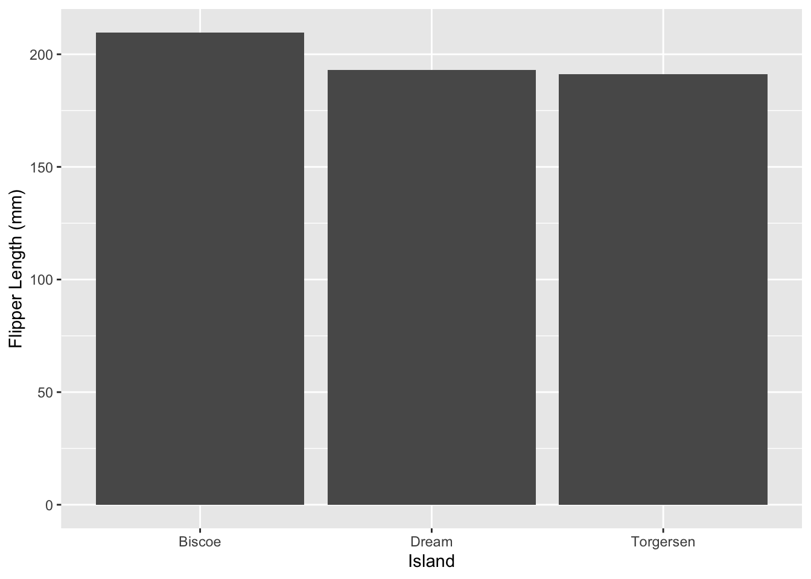
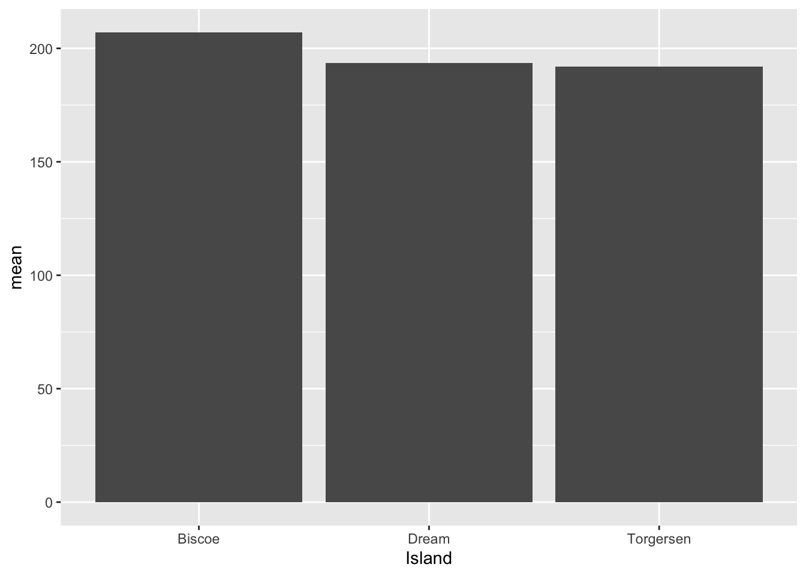
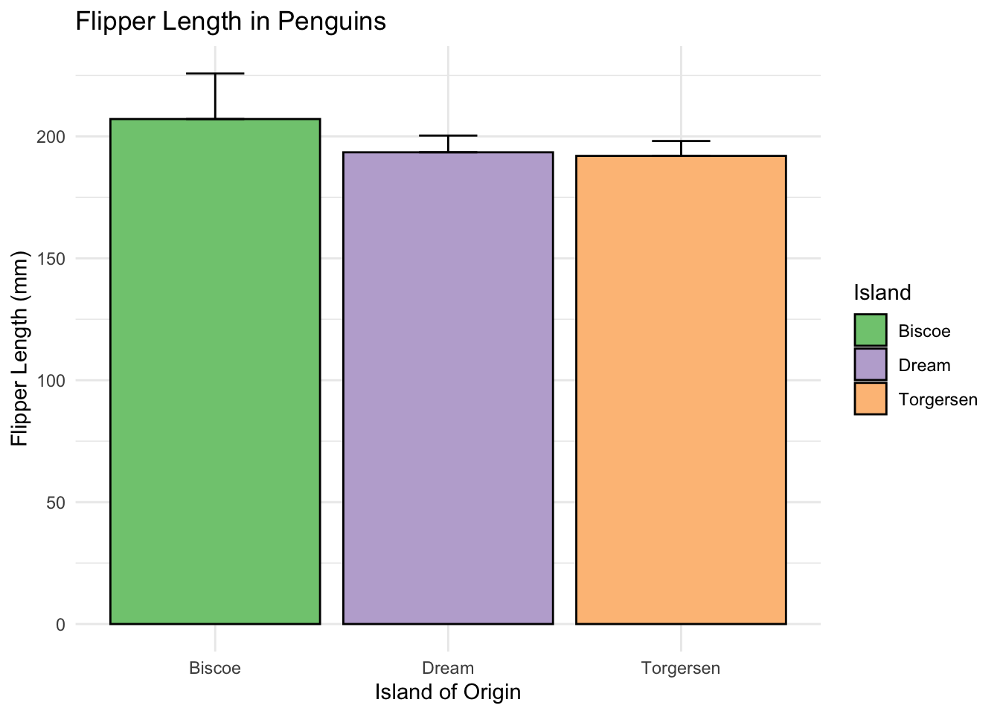

# to get your current wd
getwd() [1] "/Users/cameroncardona/Documents/r-bootcamp"# to set your wd
setwd("~/Desktop")Cameron J Cardona
In week 3, we cover two more tidyverse pacakges: readr and ggplot
All file paths in R can be referenced from your current working directory (wd). For example, if your wd is “C:/Users/You/Documents/folder1,” you can reference the file “C:/Users/You/Documents/folder1/myfile.xlsx” as “myfile.xlsx.” If your current wd is set to your “Downloads” folder, you will need to either change the directory, or use the full file path.
Here are some useful R codes pertaining to the working directory:
Files of all kinds can be read into R. The most common file types are likely .csv, .txt, and .xlsx. For .txt and .csv files, R has built in functions. There are also packages that read files inot R. One popular one is readr which has files for reading .txt, .csv and .tsv. The readr functions are typically quicker and can read larger datasets than the built in ones. For excel I like to use a package called readxl, but there are other packages that can read excel files. Pretty much any file type can be read into R. I have read .csv, .txt, .xlsx, .feather, .vcf, and files that are in the native formats of other stats programs like SAS, SPSS and STATA. The moreal of the story is that no matter the file type, someone has probably made a function that will read it into R for you.
These functions are commonly used to read data of different types in R:
| File Type: | .txt | .csv | .xlsx |
|---|---|---|---|
| Functions: | read.table() readr::read_table() |
read.csv() readr::read_csv() |
readxl::read_excel() readxl::read_xlsx() |
Similarly to reading data into R, you can also export data from R in most formats. Remembering the functions is pretty easy. Both base R and readr have corresponding functions beginning with “write” instead of “read.” To write excel files, I recommend the package writexl and the function writexl::writexlsx(). Remember when saving from R, you need to include the file extension in the function. This is typically done at the end of the argument where you give the desired file path. In my experience this is usually second, after the dataframe you want to save.
| File Type: | .txt | .csv | .xlsx |
|---|---|---|---|
| Functions: | write.table() readr::write_table() |
write.csv() readr::write_csv() |
writexl::write_xlsx() |
GGplot2 is an easy “declarative” way to crate plots in R. GGplot can be used to make common graph types. Even though base R is able to make similar graphs, I find that plotting options like ggplot2 are a bit easier to read because the pacakge takes care of options/details in the background for you. GGplot2 is built on an older version of the package called ggplot, now available as ggplot1. The package is also part of the tidyverse so you should already have it installed… if you did the first homework.
In this bootcamp, we are going to cover the basics of plotting with ggplot. If you want more information on plotting with ggplot2, I recommend this fabulous webinar from Thomas Lin Pedersen. There is also a series of videos specifically focused on graphing the results of one-way, two-way and even three-way ANOVAs on the statDOE website created by Rosane Rech, many of which have corresponding youtube videos.
Here’s a basic example of what code looks like to generate a bar graph using ggplot. Note that when doing this, you need to tell ggplot what statistic you want it to calculate and plot. Here, we plotted the mean flipper length which we selected using the stat and fun parameters.
Attaching package: 'palmerpenguins'The following objects are masked from 'package:datasets':
penguins, penguins_raw
Attaching package: 'dplyr'The following objects are masked from 'package:stats':
filter, lagThe following objects are masked from 'package:base':
intersect, setdiff, setequal, union library(ggplot2)
peng <- penguins_raw
ggplot(data = peng, aes(x = Island, y = `Flipper Length (mm)`)) +
geom_bar(stat = "summary", fun = "mean")Warning: Removed 2 rows containing non-finite outside the scale range
(`stat_summary()`).
More commonly, or at least the way I was taught to do it, you manually calculate the values you want to plot first. My general workflow is to calculate all of the summary statistics I might want all at once. Typically this means mean, SD, n, and SEM. Then you can use the resultant data frame to plot things a little easier.
Line 1: the ggplot “call”
Line 2: the “geom” line
pengstat <- peng %>%
na.omit() %>%
group_by(Island) %>%
summarise(mean = mean(`Flipper Length (mm)`),
n = n(),
sd = sd(`Flipper Length (mm)`),
sem = sd/sqrt(n))
ggplot(data = pengstat, aes(x = Island, y = mean)) +
geom_bar(stat = "identity")
GGplot2 also has many customization options. These are just a couple of them.
ggplot(data = pengstat, aes(x = Island, y = mean, fill = Island)) +
geom_bar(stat = "identity", colour = "black") + # color = outline here
geom_errorbar(aes(ymin = mean, ymax = mean + sd, # Adding error bars
width = 0.25)) +
labs(x = "Island of Origin", y = "Flipper Length (mm)",
title = "Flipper Length in Penguins") +
scale_fill_brewer(palette = "Accent") +
theme_minimal()